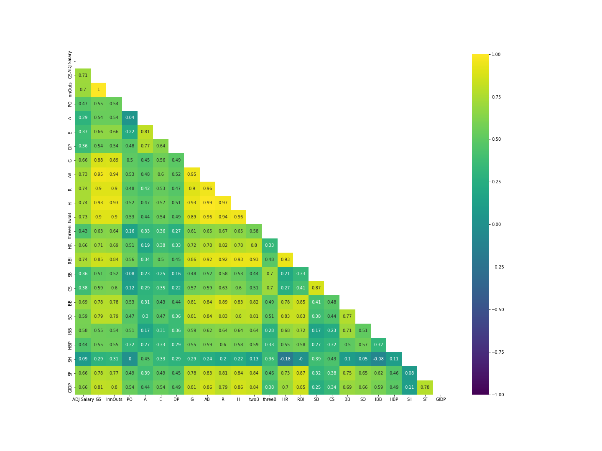
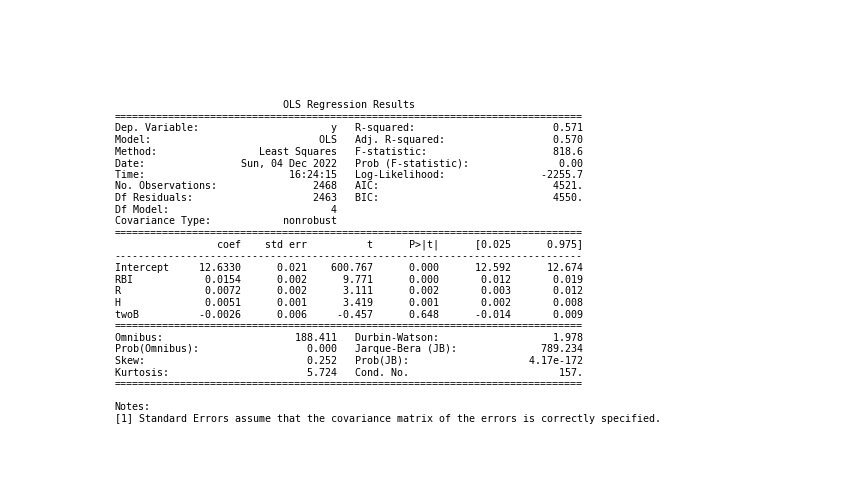

What if we aggregated all of the data by player, then took the mean of all stats (including salary)? Would this be a better approach?
In effect, we would be looking at a players' stats and salaries over the entire time frame (1985-2016), via the averages of each relevant variable.
NB: In subsequent discussions with Dom about this approach, he said it is called “Relative Strength Analysis” and is a commonly used strategy in data problems!
Once we aggregate the original dataset, we are down to 2468 observations.
But now we need to run the whole correlation matrix and feature selection business again …

Scatterplots of these features show a clear linear relationship with ADJ Salary and simple linear regressions between each feature and the target achieve r2 of up to .56! This all looks promising!
Now let's try that multivariate linear regression again, this time with RBI, R, twoB and see what the regressors can do.
GradientBoosterRegressor (GBR) achieved a .59 r2 on the test data! We can explain nearly 60% of the variance.
(Quite a bit improved over our first attempt at multivariate linear regression … we could only explain ~ 26% of the variance.)
The others weren't too far behind.

Just for good measure, let's tinker with a few ensemble methods to see if we can improve upon these results. We tried Ridge and ElasticNet regressors with SelectFromModel, but could not improve upon the GBR result.